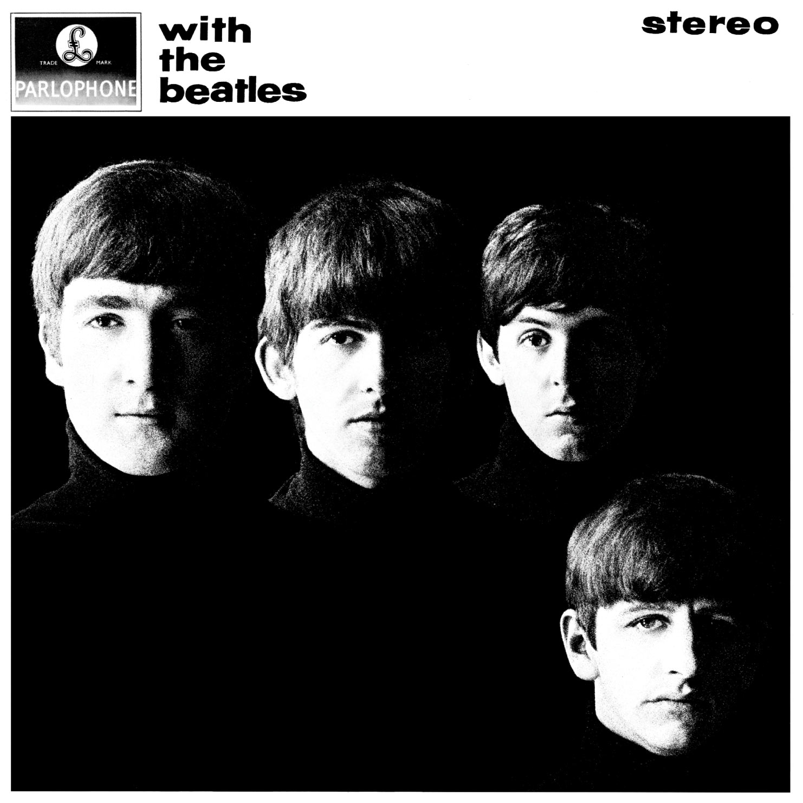

WITH THE BEATLES

El viernes 22 de noviembre de 1963, Parlophone había lanzado el segundo álbum de los Beatles titulado "With The Beatles".
The Beatles continuó donde "Please Please Me" se había quedado, combinando más originales de Lennon-McCartney con más destacados de su escenario. También incluyó el debut en la composición de canciones de su guitarrista principal de veinte años, George Harrison.
"With The Beatles" disparó al No. 1 en Gran Bretaña reemplazando a Please Please Me y permaneció allí durante 21 de las 51 semanas que pasó en el Top Twenty.
A continuacion se precentan los 14 temas de album "With The Beatles":